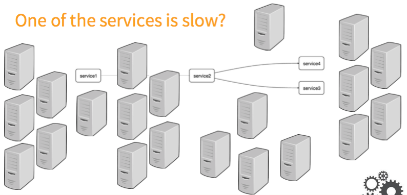
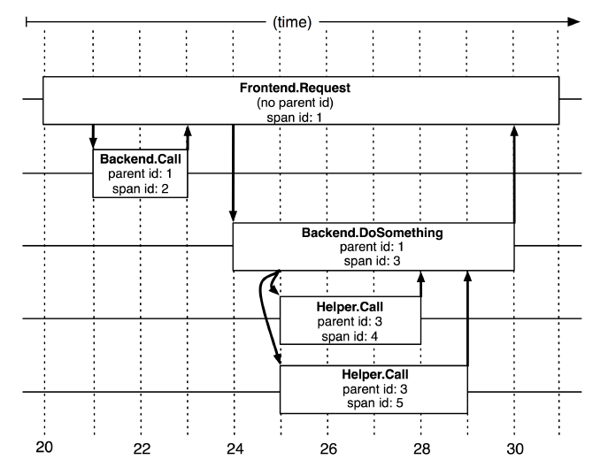
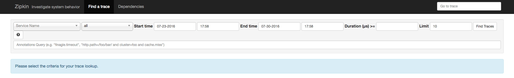
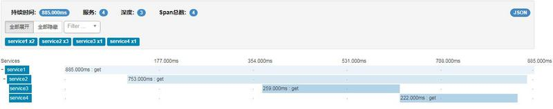

写在前面
 如图，在复杂的调用链路中假设存在一条调用链路响应缓慢，如何定位其中延迟高的服务呢？
Zipkin 为一个分布式的调用链跟踪系统( distributed tracing system )，聚合各业务系统调用延迟数据，达到链路调用监控跟踪。提到链路监控就不得不说谷歌的论文Dapper，大规模分布式系统的跟踪系统
核心概念
Trace：Zipkin使用Trace结构表示对一次请求的跟踪，一次请求可能由后台的若干服务负责处理，每个服务的处理是一个Span，Span之间有依赖关系，Trace就是树结构的Span集合； SPan：每个服务的处理跟踪是一个Span，可以理解为一个基本的工作单元，包含了一些描述信息：id，parentId，name，timestamp，duration，annotations等，例如：
1 | { |
TraceID 指的代表唯一一次请求的 ID，此 ID 一般由集群中第一个处理请求的系统产生，并在分布式调用下通过网络传递到下一个被请求系统。 SpanID 代表了本次请求在整个调用链路中的位置或者说层次，比如 A 系统在处理一个请求的过程中依次调用了 B，C，D 三个系统，那么这三次调用的的 SpanId 分别是：0.1，0.2，0.3。如果 B 系统继续调用了 E，F 两个系统，那么这两次调用的 SpanId 分别是：0.1.1，0.1.2。
Temporal relationships between Spans in a single Trace
1 | ––|–––––––|–––––––|–––––––|–––––––|–––––––|–––––––|–––––––|–> time |
在Dapper跟踪树结构中，树节点是整个架构的基本单元，而每一个节点又是对span的引用。节点之间的连线表示的span和它的父span直接的关系。虽然span在日志文件中只是简单的代表span的开始和结束时间，他们在整个树形结构中却是相对独立的， 
zipkin的架构

如图所示，各业务系统在彼此调用时，将特定的跟踪消息传递至zipkin,zipkin在收集到跟踪信息后将其聚合处理、存储、展示等，用户可通过web UI方便 获得网络延迟、调用链路、系统依赖等等。
zipkin主要涉及四个组件 collector storage search web UI
Collector接收各service传输的数据 Cassandra作为Storage的一种，也可以是mysql等，默认存储在内存中，配置cassandra可以参考这里 Query负责查询Storage中存储的数据,提供简单的JSON API获取数据，主要提供给web UI使用 Web 提供简单的web界面
快速入门实践
install
1）下载安装：
1
wget -O zipkin.jar 'https://search.maven.org/remote_content?g=io.zipkin.java&a=zipkin-server&v=LATEST&c=exec'
2）作为spring boot的一个jar，可以直接启动
1 | nohup java -jar zipkin.jar & |
3）访问 http://ip:9411 
实战
1）maven pom依赖
1
2
3
4
5
6
7
8
9
10
11
12
13
14
15
16
17
18
19
20
21
22
23
24
25
26
27
28
29
30
31
32
33
34
35
36
37<parent>
<groupId>org.springframework.boot</groupId>
<artifactId>spring-boot-starter-parent</artifactId>
<version>1.3.6.RELEASE</version>
</parent>
<dependencies>
<dependency>
<groupId>org.springframework.boot</groupId>
<artifactId>spring-boot-starter-web</artifactId>
</dependency>
<dependency>
<groupId>io.zipkin.brave</groupId>
<artifactId>brave-core</artifactId>
<version>3.9.0</version>
</dependency>
<dependency>
<groupId>io.zipkin.brave</groupId>
<artifactId>brave-spancollector-http</artifactId>
<version>3.9.0</version>
</dependency>
<dependency>
<groupId>io.zipkin.brave</groupId>
<artifactId>brave-web-servlet-filter</artifactId>
<version>3.9.0</version>
</dependency>
<dependency>
<groupId>io.zipkin.brave</groupId>
<artifactId>brave-apache-http-interceptors</artifactId>
<version>3.9.0</version>
</dependency>
<dependency>
<groupId>org.apache.httpcomponents</groupId>
<artifactId>httpclient</artifactId>
</dependency>
</dependencies>
2）核心类ZipkinBean提供需要使用的Bean
1 |
|
3）核心类ZipkinController对外接口
1 |
|
4） 分别启动四个服务，然后浏览器访问：http://localhost:8081/service1，正常调用结果返回：
service3 service4
5）可以观察zipkin web ui，查看服务的调用链： 
源码详见：https://github.com/dempeZheng/zipkindemo
疑问
brave链路监控如何解决线程切换后追踪？
比如以下调用切换了线程池，默认的情况是追踪肯定是追踪不到的。蚂蚁开源的sofa-tracer貌似是有解决线程切换后的追踪的。brave具体能不能做到还不确定，暂时没有深入去看brave的代码。
1
2
3
4
5
6
7
8
9
10
11
12
13
14
15
16
17
18("/service2")
public String service() throws Exception {
Thread.sleep(100);
Executors.newCachedThreadPool().submit(new Runnable() {
public void run() {
HttpGet get = new HttpGet("http://localhost:8084/service4");
try {
CloseableHttpResponse response = httpClient.execute(get);
} catch (IOException e) {
e.printStackTrace();
}
}
});
return "test";
}
补充
蚂蚁开源了https://github.com/alipay/sofa-tracer，貌似也支持zipkin，理论上是可以替代brave，不过没有具体实践。
参考文档
https://github.com/alipay/sofa-tracer https://github.com/liaokailin/zipkin https://segmentfault.com/a/1190000012342007